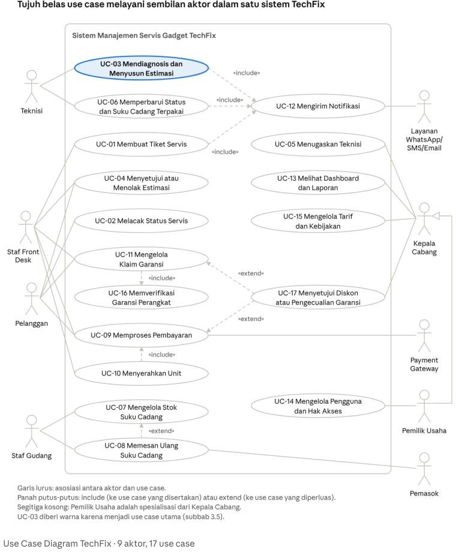
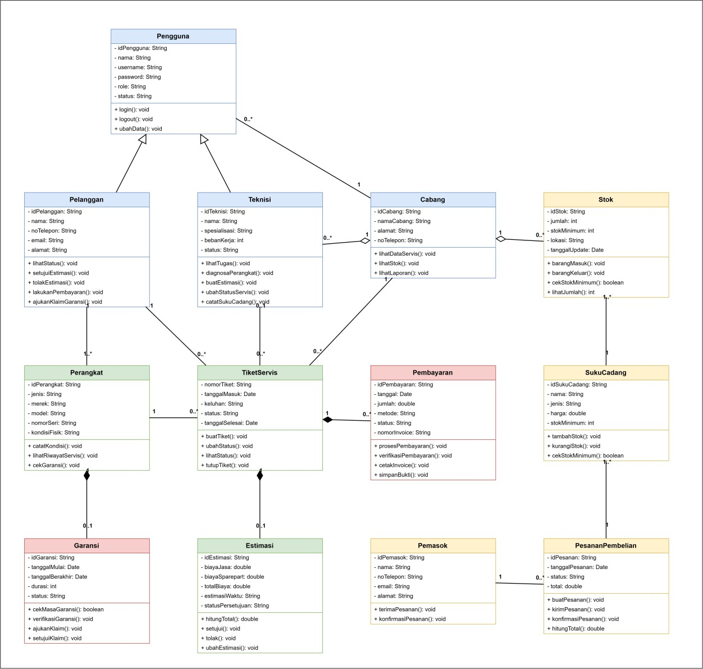
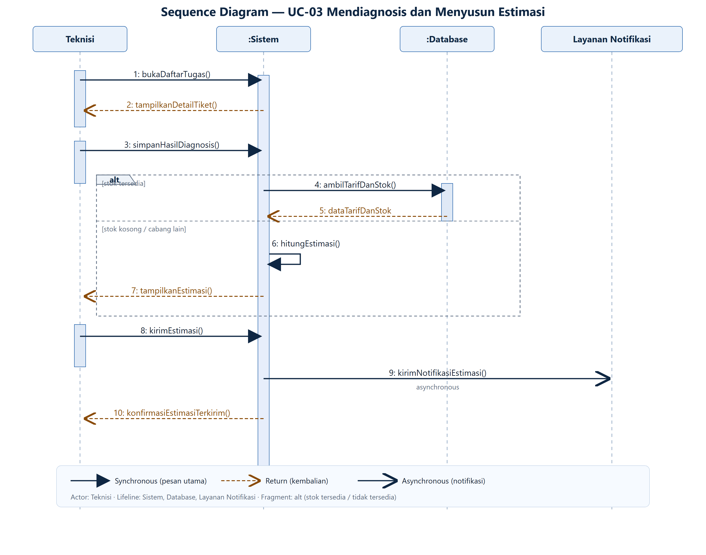
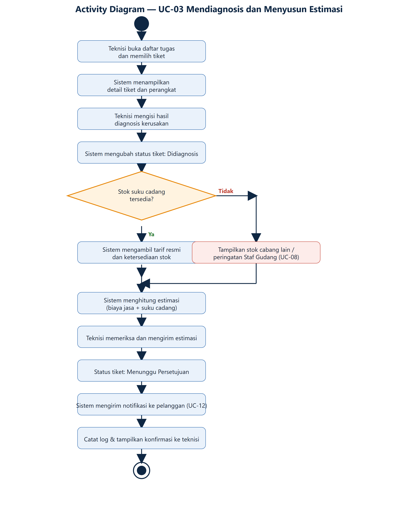

TechFix Semarang adalah pusat servis gadget (sejak 2018) dengan 2 cabang, melayani smartphone, tablet, laptop, dan smartwatch — 40–60 unit masuk per hari. Pencatatan masih manual (nota kertas & Excel terpisah).
Membangun sistem manajemen servis gadget yang terintegrasi dan terpusat untuk meningkatkan efisiensi operasional, transparansi layanan, dan kepuasan pelanggan di kedua cabang TechFix Semarang.
Sistem berbasis web (responsif) yang mencakup: penerimaan unit, diagnosis & estimasi biaya, penugasan teknisi, pengelolaan stok, pembayaran, garansi, notifikasi, hingga dashboard & laporan lintas cabang.
Telepon cek status −60% Servis tertunda akibat stok kosong −70% Waktu pengerjaan servis −25% Respons maksimal 3 detik
Tugas dikerjakan berurutan: dari studi kasus, kebutuhan, pemodelan UML, sampai rencana implementasi dan presentasi.
Setiap diagram dibuat dari kebutuhan pada SRS (traceability) sehingga use case, class, dan sequence saling konsisten: 12 FR → 17 use case → 13 class → sequence UC-03.
Primer: Pelanggan, Staf Front Desk, Teknisi, Staf Gudang, Kepala Cabang, Pemilik/Admin.
Sekunder: Pemasok, Payment Gateway, Layanan WhatsApp/SMS/Email.
FR-03 Diagnosis & estimasi biaya · FR-05 Manajemen stok · FR-09 Notifikasi otomatis.
NFR-01 Respons ≤ 3 detik · NFR-02 RBAC & HTTPS · NFR-07 Keandalan data.

Use case utama yang dipilih untuk dijabarkan: UC-03 Mendiagnosis dan Menyusun Estimasi (FR-03, FR-05, FR-09).
Teknisi mencatat hasil diagnosis, menyusun estimasi dari tarif resmi & stok, lalu sistem mengirim estimasi ke pelanggan.
Prakondisi: teknisi login & terautentikasi; tiket sudah dibuat (UC-01) dan ditugaskan (UC-05).
8 skenario alternatif (A1–A8): akses tiket bukan miliknya, perangkat tidak bisa diperbaiki, tarif belum ada, stok kosong, estimasi revisi, koneksi terputus, pembatalan, notifikasi gagal.

Generalization (Pengguna→Pelanggan, Pengguna→Teknisi) · Association · Aggregation (Cabang–Stok, Cabang–Teknisi) · Composition (TiketServis–Estimasi, Perangkat–Garansi).
Empat lifeline: Teknisi, Sistem, Database, Layanan Notifikasi — dihubungkan oleh 10 pesan berurutan waktu.
| No | Pengirim → Penerima | Jenis | Message |
|---|---|---|---|
| 1 | Teknisi → Sistem | Synchronous | bukaDaftarTugas() |
| 2 | Sistem → Teknisi | Return | tampilkanDetailTiket() |
| 3 | Teknisi → Sistem | Synchronous | simpanHasilDiagnosis() |
| 4–5 | Sistem ↔ Database | Synchronous / Return | ambilTarifDanStok() → dataTarifDanStok |
| 6–7 | Sistem (self) → Teknisi | Synchronous / Return | hitungEstimasi() → tampilkanEstimasi() |
| 8 | Teknisi → Sistem | Synchronous | kirimEstimasi() |
| 9 | Sistem → Layanan Notifikasi | Asynchronous | kirimNotifikasiEstimasi() |
| 10 | Sistem → Teknisi | Return | konfirmasiEstimasiTerkirim() |
Fragment alt membedakan stok tersedia/tidak; notifikasi bersifat asynchronous agar proses servis tidak terhambat.


| Komponen | Teknologi | Alasan |
|---|---|---|
| Bahasa pemrograman | JavaScript (Node.js 20) | Mendukung proses asynchronous (notifikasi & integrasi API). |
| Framework backend | Express.js 4 | Ringan, cocok untuk REST API & routing. |
| Antarmuka | HTML5, Bootstrap 5, EJS | Responsif di komputer & ponsel (NFR-05). |
| Basis data | MySQL 8 | 13 entitas relasional & konsistensi transaksi (NFR-07). |
| Alat UML | StarUML, Draw.io | Menggambar use case, class, dan sequence diagram. |
| Kendali versi | Git & GitHub | Kolaborasi tim dan pengumpulan tugas. |
| Notifikasi | Nodemailer, WhatsApp API | Mengirim notifikasi estimasi & status (FR-09). |
Model = src/models · View = src/views · Controller = src/controllers.
Pengguna, Pelanggan, Cabang, Perangkat, TiketServis, Teknisi, Estimasi, SukuCadang, Stok, Pembayaran, Garansi, Pemasok, PesananPembelian masing-masing menjadi satu berkas *.model.js.
Skema basis data tersedia pada database/schema.sql (13 tabel).
Alur UC-03 di kode: route → estimasiController → estimasiService (cek stok + hitungTotal) → estimasi.model → notifikasiService (async).
| Anggota (NIM) | Bagian | Tanggung jawab utama |
|---|---|---|
| Aninda Rizqi Amelia (60124009) | Use Case | Use case diagram, use case specification UC-03, activity diagram (BAB III). |
| Sifa Sabrina (60124023) | SRS | Kebutuhan fungsional & non-fungsional, aktor, batasan, asumsi (BAB II). |
| Maheswari Pasa Putri Syamsudar (60124010) | Class Diagram | Class, atribut & method, relasi antar-class, dan multiplicity (BAB IV). |
| Hasan (60124013) | Sequence Diagram | Interaksi UC-03, lifeline, pesan, combined fragment (BAB V). |
| Seluruh anggota | Studi kasus, rencana, pengujian | BAB I, VI, VII, kode program, pengujian, dan latihan presentasi. |
| Jenis | Metode & sasaran |
|---|---|
| Unit test | Jest — hitungTotal() & pengurangan stok. |
| Integration | Postman — endpoint diagnosis & kirim estimasi. |
| Black box | Skenario UC-03 (utama + 8 alternatif). |
| UAT | Wawancara pengguna (NFR-04). |